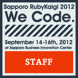

miio mitani(@ayako119)
所属(I'm belonging to...)
- 株式会社インフィニットループ (infiniteloop co.,ltd)
- 一般社団法人LOCAL (LOCAL)
連絡先(Contact)
- Email: info@miio.info
- Twitter: ayako119
Skills
Programming Languages
- PHP
- Ruby(studying)
- Objective-c(a little and studying)
- CoffeeScript(a little and studying)
- Python(a little)
- Java(a little)
OS
Editor
Events assigned as staff
2012

- Sapporo Ruby Kaigi 2012(Report)
- OSC Hokkaido 2012(Session TA)
- PHP Conference Hokkaido 2012(Network)
- GlobalGameJam(Party)
2011
- Boost.Study #6 Sapporo(Ustream/Network)
- TDD BootCamp Sapporo 2.1(PHP/Symfony2 TA)
- Game Programing Study Sapporo1.0(Ustream/Network/Party)
- OSC Hokkaido 2011(Report)